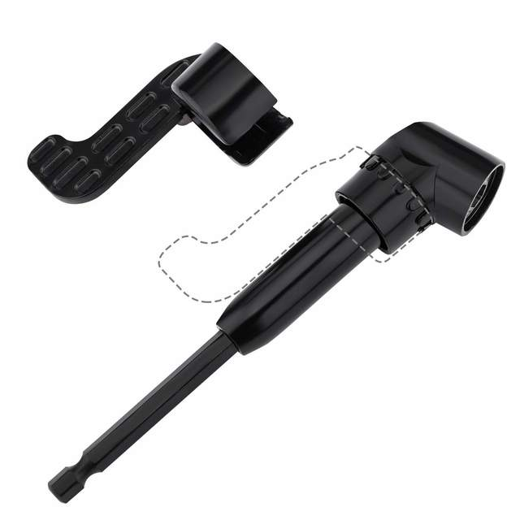
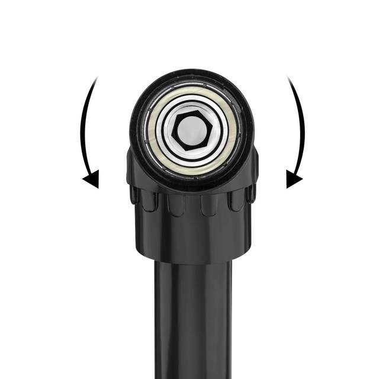
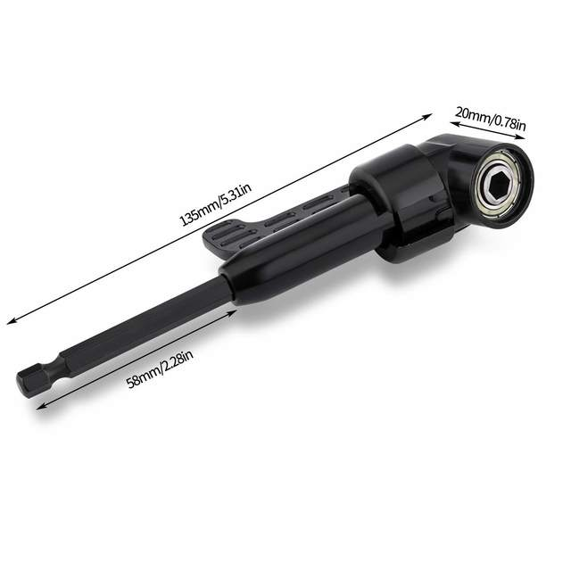
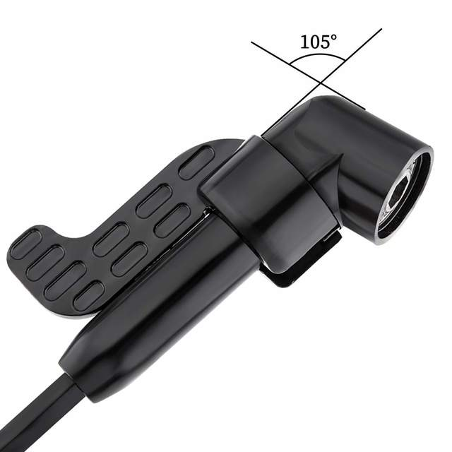
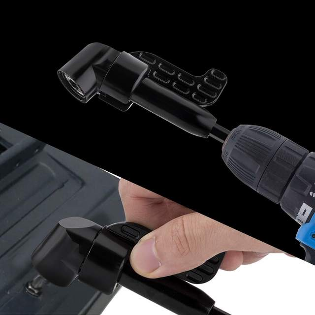

Features:
- Can be connected to electric drill and manual wrench, being a spanner so as to extend to where drill can't 90 degrees to operate to twist screws and nuts, easy to use.
- Fit for Electric drill and spanners.
Fit 1/4”:Accepts all 1/4" standard hexagon shank bits, screws with no more than 10NM torque
Ball Bearings:Gears housed in die cast body with 3 sets of ball bearings for long lasting durability
Hex Socket:Magnetic 1/4 inch hex socket accepts and holds standard drill and driver bits
Quick Change:Handy quick change right angle tool and fits most power drill and socket wrench
Application:Can be connected to electric drill and manual wrench to extend to where drill can't
Specification:
Color:Black
Size:S(Short), L(Long)
Material: Chrome Vanadium Steel
Package Included:
1PC 105 Degree Screwdriver Bit Holder




